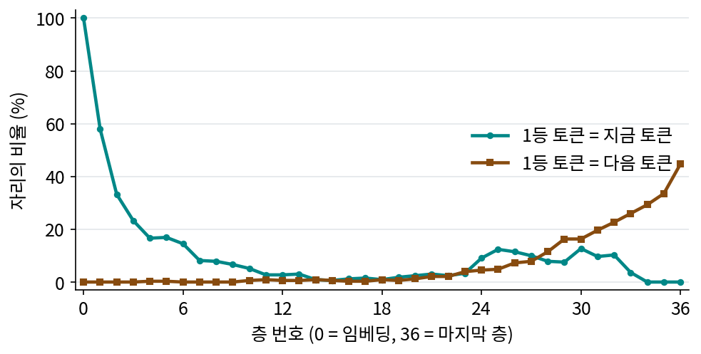

14장 — 글을 읽는 인코더: CLIP의 마지막 층에서 언어모델의 여러 층으로
언어모델 인코더: 다음 토큰을 맞히도록 배운 모델의 속을 빌리기
CLIP의 글 인코더는 문장과 그림의 짝을 맞히며 배웠다. 짝 맞히기에 필요 없는 것, 곧 색을 맞바꾼 두 문장의 차이는 벡터를 거의 움직이지 않았다. 또 CLIP의 글 인코더는 토큰 77개까지만 읽고, 사진 곁의 짧은 글로 배웠다. 「왼쪽 창가에 놓인 화분 셋 가운데 가운데 것만 빨갛다」 같은 긴 묘사를 그리려면, 문장의 짜임을 더 잘 읽는 인코더가 필요하다. 문장의 짜임을 가장 많이 배운 모델은 글만 잔뜩 읽은 언어모델이다. 그 모델을 인코더로 빌려 오면 어떨까?
역사: 인코더를 키우는 쪽이 더 남는다
2022년 구글의 사하리아(Chitwan Saharia)와 동료들은 Imagen 을 만들며 글 인코더로 CLIP 대신 글만으로 학습한 T5-XXL 의 인코더를 얼려 둔 채 썼다. T5 는 문장의 빈칸을 채우도록 학습한 인코더–디코더 모델이고, 그 인코더는 24층, 토큰 하나에 4096개의 수를 낸다. 이들은 논문 초록에서 「Imagen 에서 언어 모델의 크기를 키우는 것이 그림 디퓨전 모델의 크기를 키우는 것보다 그림의 충실도와 글–그림 정렬을 훨씬 더 많이 끌어올린다」고 적었다. 그림을 그리는 쪽을 키우는 것보다 글을 읽는 쪽을 키우는 것이 더 남는다는 뜻이다.
그 뒤 모델들은 이 길을 따랐다. Stable Diffusion 3(에서(Patrick Esser)와 동료들, 2024)은 CLIP 글 인코더 둘에 T5-XXL 을 더해 셋을 함께 썼고, 추론 때 T5 를 빼도 대부분의 프롬프트에서는 쓸 만하지만 그림 속 글자를 쓰는 일에서 크게 떨어진다고 보고했다. FLUX.1 은 T5-XXL 의 토큰마다 벡터를 주된 조건으로, CLIP 의 문장 벡터를 보조로 쓴다. 다음 단계는 대화형 언어모델이었다. Qwen-Image 는 그림까지 읽는 시각언어모델 Qwen2.5-VL-7B 의 마지막 층을, Z-Image 는 언어모델 Qwen3-4B 의 끝에서 둘째 층을 조건으로 쓴다(ComfyUI comfy/text_encoders/qwen_image.py, z_image.py).
마지막 층은 다음 토큰 쪽으로 기운다
T5 의 인코더는 출력이 디코더로 넘어가 읽히도록 학습됐다. 마지막 층의 토큰마다 값이 쓰임새를 갖고 학습된 것이다. 대화형 언어모델은 다르다. 언어모델은 토큰마다 「다음에 올 토큰」을 맞히며 학습하고, 마지막 층의 은닉 상태는 출력 헤드를 거쳐 곧바로 다음 토큰의 확률이 된다.
그렇다면 중간 층의 은닉 상태를 같은 출력 헤드에 넣어 보면 어떨까? 층마다 이 값이 「지금 토큰」을 가리키는지 「다음 토큰」을 가리키는지 읽어 볼 수 있다. 이런 읽기를 흔히 로짓 렌즈(logit lens)라고 부른다. Krea 2 의 글 인코더와 같은 구조인 Qwen3-VL-4B 의 언어 쪽(36층, 2560)에 그림 설명 문장 30개를 Krea 2 와 같은 틀로 넣고, 프롬프트 토큰 331자리에서 층마다 1등 토큰을 세었다.

임베딩(0층)에서는 모든 자리가 자기 토큰으로 읽힌다. 층을 지날수록 그 비율이 줄어 12층 무렵에는 3% 아래가 된다. 다음 토큰으로 읽히는 비율은 20층까지 거의 0이다가 뒤쪽 층에서 가파르게 오른다. 마지막 층은 다음 토큰을 맞히라고 직접 학습된 층이라 그 쪽으로 가장 많이 기울어 있다. 문장이 무엇을 말하는지보다 다음에 무슨 낱말이 올지를 더 많이 담는다는 뜻이다. 디퓨전이 원하는 것은 앞의 것이다.
이렇게 큰 언어모델을 얼린 채 그 은닉 상태를 조건으로 빌려 쓰는 것을 이 책에서는 언어모델 인코더 (글만 읽은 모델을 빌린 글 인코더 / LLM text encoder)라고 부른다.
ML에서: 시스템 문구로 감싸 읽고 머리를 떼어 낸다
Qwen-Image 와 Krea 2 는 프롬프트를 그대로 넣지 않는다. 「그림을 색, 모양, 크기, 질감, 개수, 글자, 물체와 배경의 공간 관계를 자세히 들어 묘사하라」는 시스템 문구와 대화 틀로 감싼 뒤 읽고, 은닉 상태에서 시스템 문구와 대화 틀의 머리 부분 토큰을 잘라 내고 넘긴다(comfy/text_encoders/krea2.py 의 KREA2_TEMPLATE 과 머리 자르기). 언어모델에게 「이 문장을 그림으로 묘사할 것」이라는 상황을 먼저 주어, 은닉 상태가 그림에 필요한 쪽을 담게 하려는 것이다.
문제 7. 렌즈로 읽은 층
위 그림을 보고 답하라. (가) 0층에서 지금 토큰 비율이 정확히 100%인 까닭은? (나) 마지막 층에서 다음 토큰 비율은 44.7%다. 이 숫자는 무엇을 재는가? 100%가 될 수 있는가? (다) 「a bowl of」까지 읽은 자리의 마지막 층 은닉 상태와 12층 은닉 상태가 각각 가장 많이 담고 있을 것은?

(가)는 0층이 토큰 임베딩 그대로라서요. 근데 임베딩을 출력 헤드에 넣으면 왜 자기 자신이 1등이에요?

기호 표에서 출력 헤드가 어떤 행렬이라고 했죠?

토큰 임베딩과 같은 행렬이요. 그럼 임베딩 벡터 하나를 그 행렬에 곱하면 자기 자신과의 내적이 나오는 거고, 정규화 뒤에는 자기와의 내적이 가장 크게 나오는 거네요. 30문장 모든 자리에서 그랬고요.

(나)는 언어모델이 다음 토큰을 맞힌 비율 그 자체야. 「a photograph of an old」 다음에 lighthouse 가 올지 house 가 올지는 모델도 모르니까 100%가 될 수 없어. 렌즈가 마지막 층에서 재는 건 모델의 실제 예측이야.
그럼 (다)는요?

마지막 층의 「of」 자리는 다음 토큰 후보, 곧 soup, noodles, rice 같은 것 쪽으로 기울어 있을 거야. 12층은 지금 토큰도 다음 토큰도 거의 안 가리키니까, 그 사이의 무언가, 「무엇을 담은 그릇 이야기가 진행 중」 같은 뜻을 담고 있겠지.

렌즈로 읽히지 않는다는 건 정보가 없다는 뜻이 아니라 낱말 하나로 읽히지 않는다는 뜻이에요. 중간 층이 무엇을 담는지는 뜻을 직접 견주는 다른 방법으로 재야 해요.

받아쓰기 시험에서 방금 들은 낱말을 적는 손, 문장 뜻을 생각하는 머리, 다음 낱말을 미리 짐작하는 입이 따로 있는 거네요.
문제 8. 틀 없이 넣으면
Qwen3-VL-4B 언어 쪽에 프롬프트를 시스템 문구 틀 없이 그대로 넣고, 층마다 맨 첫 토큰의 은닉 상태 크기(노름)를 나머지 토큰 크기의 중앙값으로 나눴다. 30문장 평균이 1층 1.2배, 7층 175.3배, 20층 87.9배, 35층 7.2배였다. (가) 토큰 평균으로 문장을 한 벡터로 줄이면 7층에서는 무슨 일이 생기는가? (나) 틀 없이 잰 뜻 짝 찾기(뜻은 같고 낱말이 다른 문장 짝 40개에 미끼 40개를 섞은 80문장에서 제 짝을 1등으로 고른 비율)가 7층에서 5%, 틀에 넣고 프롬프트 자리만 잰 값이 36%였다. 이 차이를 설명하라. (다) Krea 2 와 Qwen-Image 가 시스템 문구를 붙인 뒤 머리를 잘라 내는 일은 이 문제와 어떻게 이어지는가?
175배면 평균을 내도 그 토큰 하나 빼면 거의 안 바뀌겠네요. 그럼 평균이 첫 토큰이랑 거의 같아요.

그런데 첫 토큰은 문장마다 「a」거나 「an」이거나 「two」잖아. 그럼 문장 벡터가 첫 낱말 하나로 정해지는 꼴이네.
첫 토큰은 왜 그렇게 커졌을까요? 첫 자리 토큰은 어텐션에서 어떤 처지죠?
앞을 보는 어텐션에서 첫 자리는 모든 토큰이 언제나 볼 수 있는 유일한 자리예요. 어디에도 주의를 줄 데가 없을 때 주의를 내려놓는 자리로 쓰이다 보니, 값이 문장의 뜻과 상관없이 커진 걸로 보여요.
그렇게 해석하는 연구가 많아요. 우리가 확인한 건 크기가 175배라는 것까지예요. (나)는요?

틀에 넣으면 그 큰 첫 토큰이 시스템 문구의 맨 앞에 가 있고, 우리는 프롬프트 자리만 평균 내니까 그 토큰이 빠져요. 그래서 5%에서 36%로 오른 거고요.
(다)는 같은 일이야. 시스템 문구가 언어모델에게 「그림을 묘사하라」는 상황을 주는 것 말고도, 맨 앞 자리를 문구가 차지하게 만들어. 그 머리를 잘라 내면 디퓨전 쪽에 넘어가는 토큰 줄에는 그 큰 값이 없어.

회의록 첫 줄에 늘 「참석자: 전원」이 적혀 있으면, 회의록끼리 비교할 때 그 줄은 떼고 보는 거랑 같네요.